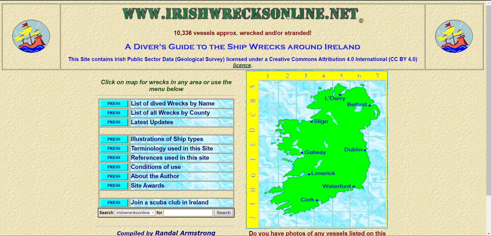

Hall of fame or shame?

Link for the website used is:
http://www.irishwrecksonline.net
I like..
That the they have a search function.
That the they provide email to send erros, omissions, inclusions.
I wish..
That the colors matched a little more.
That the website had better looking images.
That the colors were a little more dim.
That once you click the name of the area it redirects you to it instead of clicking the point in the map.
What if...
Instead of using cartoon images they used better quality images.
More context of the website is included.
A hover effect is added to the name of each area to indicate that they are clickable.